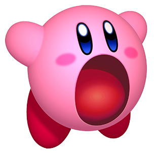

Kirby was conceived by Masahiro Sakurai, a video game designer then under HAL Laboratory's employment when designing a game for Nintendo's Game Boy. He was originally created as a blob placeholder sprite for the game, originally titled "Twinkle Popo". Over time, Sakurai grew fond of the placeholder sprite, and preferred it over the conception of the original protagonist of the game it was being designed for, so Kirby became the star of his first game. Despite the developers keeping Kirby's model, he was known as Popopo for a time before being renamed Kirby.The game was renamed meaning "Kirby of the Stars" in Japan, and became known in North America and most other parts of the world as Kirby's Dream Land. Where Kirby got his name from is not known, since Masahiro Sakurai himself has been quoted as saying he does not remember how Kirby got his name. However, it is believed that Kirby might have been named after the Kirby Company, which manufactures vacuum cleaners and suits Kirby and his inhalation abilities. The other explanation is that he might have been named in honor of Nintendo's legal counsel, John Kirby of Latham & Watkins LLP, who defended Nintendo against a copyright infringement lawsuit filed by Universal Studios over the similarities of Donkey Kong to King Kong.
Kirby is a pink, small, spherical creature with large red feet, stubby arms, and trademark pink cheek-blushes. His body is soft and flexible, allowing him to be flattened. He is supposedly 8 inches tall, according to the Super Smash Bros. games. His weight is unknown, although several parts of the anime, the game Kirby 64: The Crystal Shards, and the Super Smash Bros. series suggest that he is light enough to be carried and for the wind to cause him to move in an unwanted direction.  He hails from the planet Pop Star, where he lives in a dome-shaped house in the kingdom of Dream Land. His appearance has changed subtly over the years, becoming more rounded and defined, mainly in his face and larger blue eyes. The new design has been used in all subsequent games.
Source: All About Kirby
Source: The Villains of Kirby's world